See it. Choose it. Run it.
Your guide to DialogR.
Follow the screenshots, make your selections, and understand the results. No R programming required.
DialogR 1.0.23 · Actual desktop screenshots · ESS Round 9, Romania · Optional R reference
Your first analysis
Follow a complete example with European Social Survey data: import a dataset, choose a variable, and produce a table that distinguishes valid responses from declared missing values. DialogR constructs the command for you.
{kind=link}
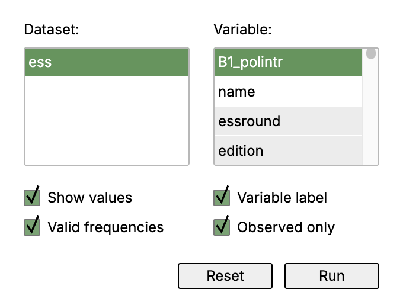
The dataset used in this guide. Screenshots use the prepared English-labelled ESS Round 9 Romania dataset, ess9en.rds, imported as ess. It contains 1,846 cases and 345 variables. The analysis variables retain their declared classes, labels, and missing-value definitions.
Use this prepared file if supplied with your course. You can also obtain data from the ESS Data Portal; an original ESS download may have different variable names. The guide uses the prefixes in the prepared file, such as B1_polintr.
- Start DialogR. Complete desktop package setup, or wait for WebR to load.
- Choose File → Import data. Browse to ess9en.rds, enter ess in Assign to, and click Import.
- Open the dataset editor. Explore the Data and Variables tabs. Keep the labels and missing-value definitions supplied with the file.
- Choose Analyze → Descriptive statistics → Frequency table. Select ess and B1_polintr, “How interested in politics”.
- Select Variable label and click Run. Leave Show values, Valid frequencies, and Observed only selected. No command needs to be typed.
What to look for
The four valid response categories contain 135, 380, 659, and 665 cases. Seven cases are labelled Refusal and treated as missing for the valid percentages. The overall total is 1,846; the valid total is 1,839. “Not at all interested” therefore represents 36.0% of all cases and 36.2% of valid responses.
{kind=link}
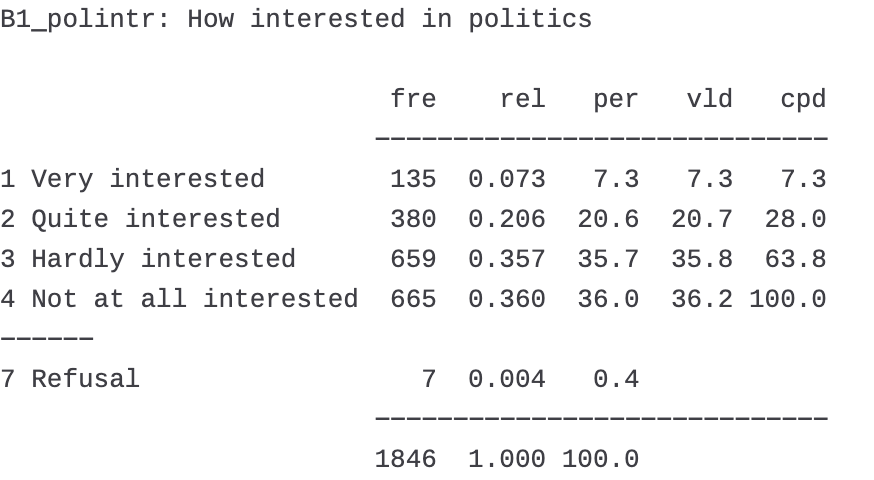
Begin with no filter, split groups, or weight. These are unweighted teaching examples for the supplied Romanian dataset, not population estimates for all ESS countries. Read Labels and declared missing values next.
Get to know the data editor
If you have used SPSS, the layout will be familiar. Switch between the observations themselves and the definitions of their variables.
{kind=link}
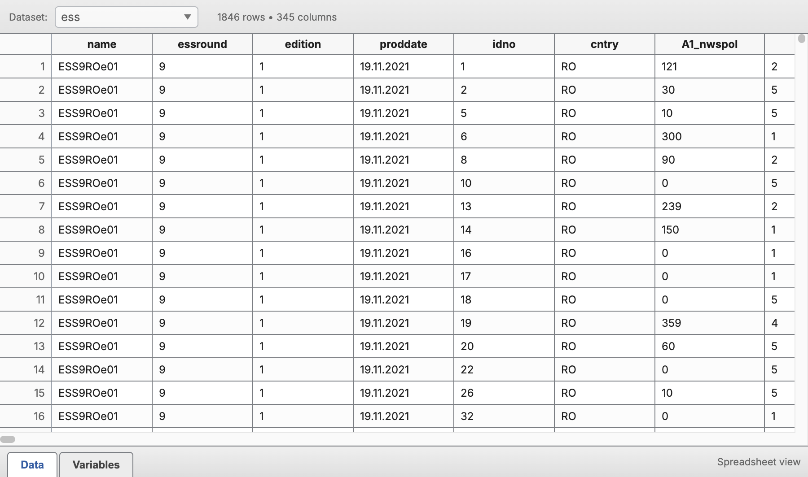
Work with the data
Open ess from the workspace. The Data tab shows one respondent per row and one variable per column. Check the dataset name and dimensions at the top. The original file contains 1,846 rows and 345 columns; use the scrollbars or Go to to reach a particular variable.
Review the variables
Click Variables. Rows now describe variables. Find B1_polintr to see its descriptive label and value definitions. The Values cell opens the editor for category labels and missing values.
{kind=link}
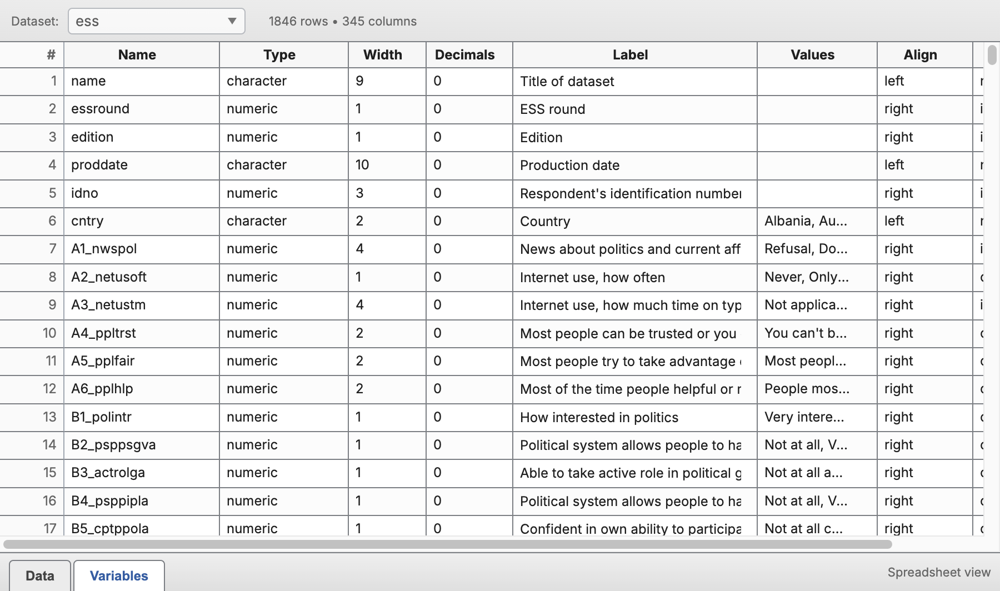
The numeric storage type does not mean the variable is an ordinary unlabelled number. Its declared class also carries its meaning: category labels and which codes are missing. Inspect those definitions before an analysis.
Find an analysis
Data prepares cases and variables, Transform contains recoding, and Analyze contains statistical procedures. Dialogs construct the commands from your choices.
SPSS data files can be imported through Import data. Existing SPSS syntax is not translated; the task guide lists the available procedures.
Find and keep track of variables
Hundreds of variables need not mean hundreds of rows to search through. DialogR keeps selected variables pinned at the top of variable lists and lets you search within a list.

See what you have selected
Selected variables move to the top of their container, so you can check your choices together without hunting through the dataset. Pinning changes the display of the list; it does not reorder the columns in your data.
Search a variable list
- Move the mouse pointer over the variable list you want to search.
- Press Ctrl + F on Windows or Linux, or Cmd + F on macOS. A search box appears above that list.
- Type all or part of a variable name. For example, type trstlgl to find B7_trstlgl, trust in the legal system.
- Select the variable you need. Press Escape to close the search and show the full list again.
{kind=link}
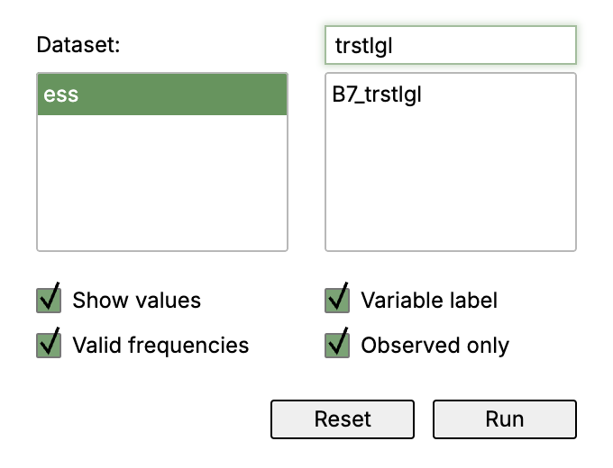
Search narrows what is visible; it does not clear an existing selection. A selected variable that does not match the search may be hidden temporarily. Close the search to review the selected variables at the top.
To keep the command created from your choices, use Send to Script Editor.
Labels and declared missing values
DialogR uses the declared R package to solve a familiar problem in R: keeping several kinds of missing response distinct. Refusal, “don’t know”, and “not applicable” can each retain their own code and label while being treated as missing in supported calculations.
{kind=link}
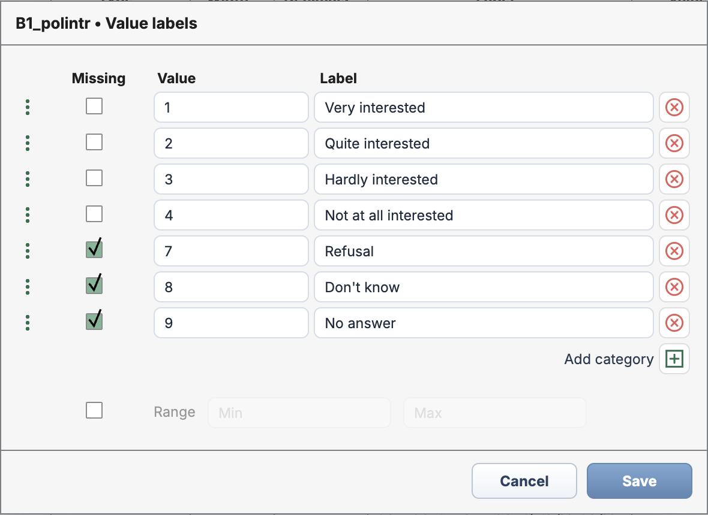
To carry out this example
- Open ess in the dataset editor and select Variables.
- Find B1_polintr (How interested in politics). Click the … button in its Values cell.
- Review the labels for 1–4 and the missing flags for 7 Refusal, 8 Don’t know, and 9 No answer.
- For this example, leave the supplied definitions unchanged and click Cancel. To intentionally change a definition in your own dataset, edit the label or Missing flag and click Save.
Powered by the declared R package
An ordinary R missing value, NA, does not by itself record why a response is missing. The declared package carries those definitions with the variable. DialogR makes them accessible through dialogs and the variable editor, without requiring you to write R code.
Missing does not have to mean “unknown reason”
Refusal and “don’t know” are different responses. Declaring them missing allows analyses to exclude them from valid calculations while keeping those distinctions available in the data and frequency table. You do not have to replace all of them with one anonymous blank value.
Which codes count as missing?
It depends on the variable’s definition. Political interest declares 7, 8, and 9 missing. Trust in the legal system (B7_trstlgl) uses 77, 88, and 99. Age (F3_agea) declares 999 as “Not available”. A number is not missing merely because it looks unusual.
The supplied file already has these definitions. Keep them when importing, subsetting, or saving. Plain CSV does not preserve variable labels, value labels, or declared missing-value metadata; use a format that preserves those definitions when you need them.
What to look for
With Observed only selected, the political-interest table shows the seven refusals that actually occur. Don’t know and No answer remain defined in the variable even though neither occurs here. Clear Observed only if you want to include unobserved labelled categories.
In Numerical summaries, trust scores use their valid 0–10 scale: 77, 88, and 99 must not be treated as unusually high trust. The declared class makes this distinction part of the variable, not a rule you have to remember for each calculation.
Set up DialogR
Choose desktop DialogR for local work, or WebR to start in a browser with the required packages already supplied.
Desktop: you are responsible for installing the necessary R packages. Installing the application alone does not finish setup. Packages provide the calculations and import tools used by the dialogs.
WebR: the packages are included, but analysis is slower. You do not need to install R packages on your computer. Allow time for the browser application and its library to load.
Complete desktop setup
- Install the appropriate release from Get DialogR and start the application.
- Make sure the local R runtime is available.
- Choose Packages → Install required R packages. Keep your internet connection available and wait for installation to finish.
- If a dialog reports an old package, choose Packages → Update development versions. Read any installation error before trying again.
What the packages do
| Package | What it supplies | Required version |
|---|---|---|
| admisc | Working within datasets and recoding values. | 0.41 or newer |
| declared | Labelled data, missing-value handling, tables, and summaries. | 0.27 or newer |
| DDIwR | Importing data from other statistical software and Excel. | 0.20 or newer |
| statistics | Independent-samples t-tests and one-way ANOVA with variance-homogeneity handling. | Newer than 0.14 |
The setup workflow also installs supporting packages. They must be installed in the R installation used by DialogR. If Excel import reports a missing readxl package, that import dependency must be installed in the same R library. Further technical information is in the optional package reference.
Import data
Bring in a dataset from SPSS, Stata, SAS, Excel, a text file, or an R dataset. Importing data does not import another program’s analyses or syntax.
{kind=link}
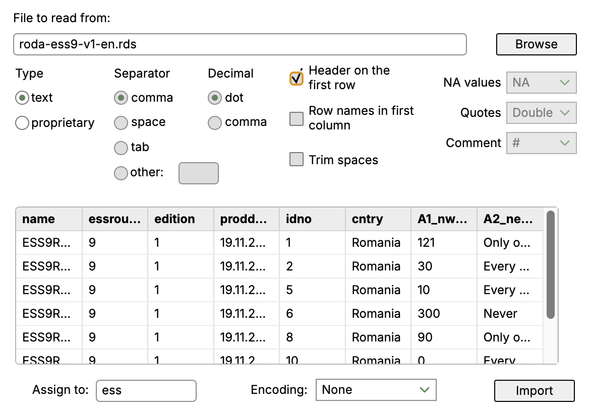
To carry out this example
- Click Browse and choose ess9en.rds, or your own supported data file.
- Enter ess under Assign to for this example.
- For a text file, check separator, decimal mark, header, missing-value marker, quotes, and encoding. These parsing controls are not needed for the prepared R dataset.
- Click Import. Open the dataset and review variable labels, value labels, and missing-value definitions in Variables view.
Supported files
| Source | File types |
|---|---|
| SPSS | .sav, .zsav, .por |
| Stata | .dta |
| SAS | .sas7bdat, .xpt |
| Excel | .xls, .xlsx |
| Delimited text | .csv, .txt, .tsv, .tab, .dat |
| R dataset | .rds |
Prepare an Excel worksheet
Put a single rectangular table on the first sheet. The first row should contain unique variable names, with one variable per column and one case per following row. Remove title rows, merged cells, subtotals, and blank rows within the table. Use consistent types of values in each column.
The dialog does not offer a sheet selector. Move the intended table to the first sheet, or save it as CSV. Optional DDIwR metadata sheets are described in the advanced import reference.
Check the import
If text data appears in one column, check the separator. If accents look wrong, check the encoding. A value such as 99 is not automatically missing: check the file’s missing-value definitions.
In WebR, choose the file through the browser’s file picker. Save the files and results you need before closing the session.
What to look for
The prepared ESS dataset appears as ess with 1,846 cases and 345 variables. Its declared variables retain the supplied labels and missing-value definitions. A CSV import cannot supply metadata that was not stored in the file.
Choose a task
Find the task you want to carry out, then follow its illustrated instructions. The menu names below match the application.
Run carries out an analysis. OK confirms a data-management choice. Reset restores dialog options; it does not undo a transformation already carried out.
Sort cases
Put respondents in order by one or more variables. The example sorts by age and saves the ordered cases into a separate dataset.
{kind=link}
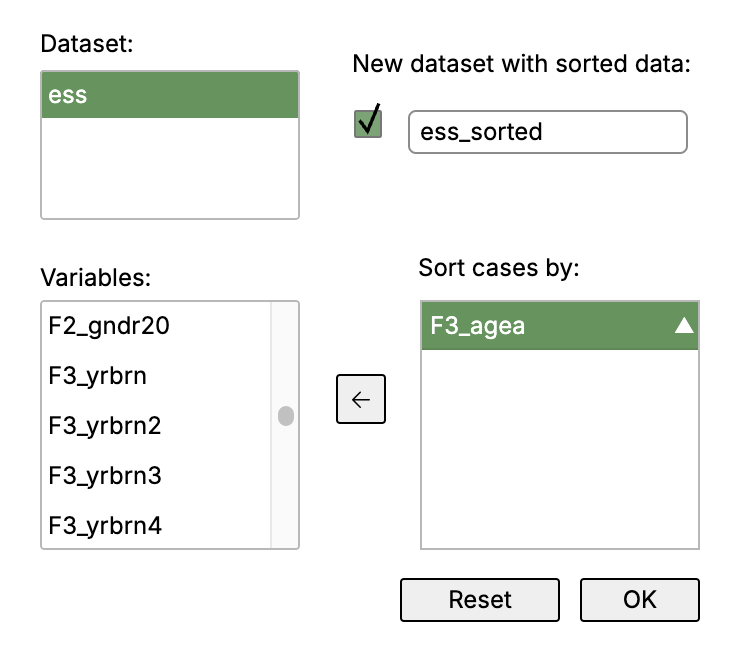
To carry out this example
- Select ess.
- Select F3_agea and click the arrow to move it into Sort cases by.
- Select New dataset with sorted data and enter ess_sorted.
- Click OK and open ess_sorted to inspect the order.
Sorting options
You may choose several sorting variables. The first is the primary key; later variables break ties. Sorting follows ascending R order. Without the new-dataset option, DialogR replaces the original dataset with the sorted version.
What to look for
The cases are ordered by age, from younger to older. The original ess dataset remains available. Sorting changes row order, not the variable labels or missing-value definitions.
Split by groups
Repeat a supported analysis separately for each group. The example produces political-interest tables by the gender categories recorded in the ESS dataset.
{kind=link}
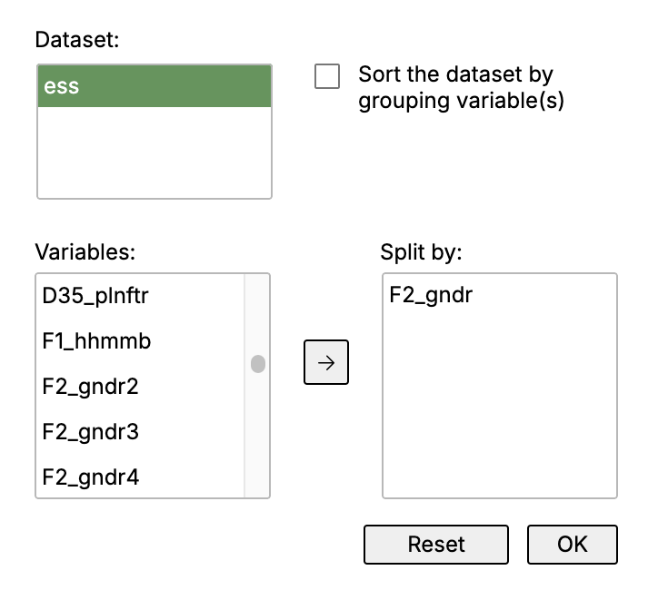
To carry out this example
- Select ess.
- Move F2_gndr into Split by using the arrow.
- Click OK, then run a frequency table for B1_polintr.
- When finished, reopen Split by groups for ess and click Reset to clear grouping.
Options and scope
More than one grouping variable defines combinations of groups. Moving variables changes the stored grouping choice immediately. The dialog also records a sorting preference; use Sort cases when you need to explicitly reorder rows.
Grouping is used by frequency tables, contingency tables, numerical summaries, and one-way ANOVA. It is not used by the two t-test dialogs. See Filters, groups, and weights.
What to look for
You receive a separate table for each observed gender category, with the category labels retained. The original data remain one dataset. Check the valid denominator within each group, particularly where declared missing responses occur.
Subset cases and variables
Keep respondents who meet a condition, keep selected columns, or create a smaller dataset. This example follows the teaching material by selecting respondents labelled Female.
{kind=link}
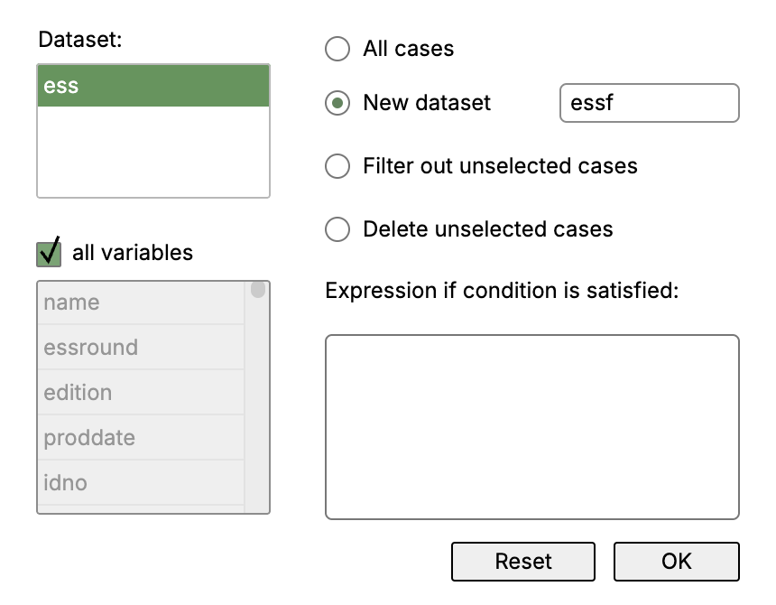
To carry out this example
- Select ess and leave all variables selected.
- Choose New dataset and enter essf.
- In the condition field, enter F2_gndr == "Female". The variable’s declared labels let you refer to the category by its label.
- Click OK and inspect essf in the editor.
Choose how to use the selection
- All cases: turns off the current filter.
- Filter out unselected cases: keeps the original data and restricts subsequent supported analyses.
- New dataset: saves the selected cases into a separate dataset.
- Delete unselected cases: replaces the original dataset with the selected cases.
To retain only certain columns, clear all variables and select the columns you need. Include any analysis, grouping, or weight variables that later steps require.
This dialog’s condition field uses a short R expression. You do not need to write a whole command. More condition examples are in the optional expression reference.
What to look for
The new dataset contains the selected respondents and retains the variables’ labels and declared missing-value definitions. The original ess remains available. Run a gender frequency table in essf to check the selection.
Apply frequency weighting
Use a frequency variable when cases represent different numbers of occurrences. The supplied ESS teaching dataset includes a variable named fweight, labelled Frequency weight.
{kind=link}
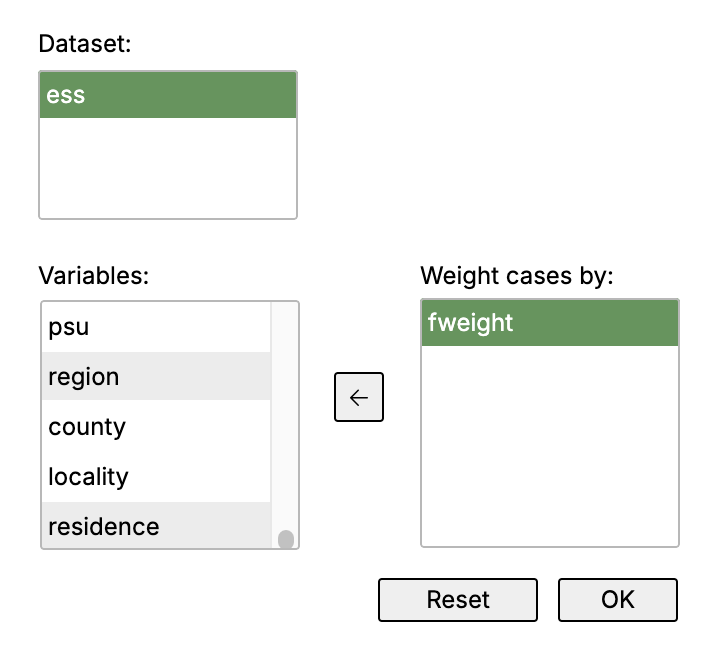
To carry out this example
- Select ess.
- Move fweight into Weight cases by using the arrow.
- Click OK, then run a frequency table for B1_polintr.
- Reopen the weighting dialog for ess and click Reset to stop weighting.
Changing the weighting list updates the setting immediately. Weighted tables and supported numerical summaries use it; the t-test and ANOVA dialogs do not.
Check that the variable is numeric and really represents frequencies. This option is not a complete survey design with clusters, strata, or design-based standard errors.
This file also contains design, post-stratification, population, and analysis weights. Those are not interchangeable with frequency weights. The example uses the existing fweight variable from the teaching file; it does not claim that this menu provides a complete ESS survey-design analysis.
What to look for
Counts and percentages now use the supplied frequency weight. Missing responses remain identified by their declared codes and labels. The dataset still has 1,846 rows; weighting does not physically duplicate them.
Recode variables
Turn values into categories while retaining the original variable. Following the teaching example, group age into under 45 and 45 or older.
{kind=link}
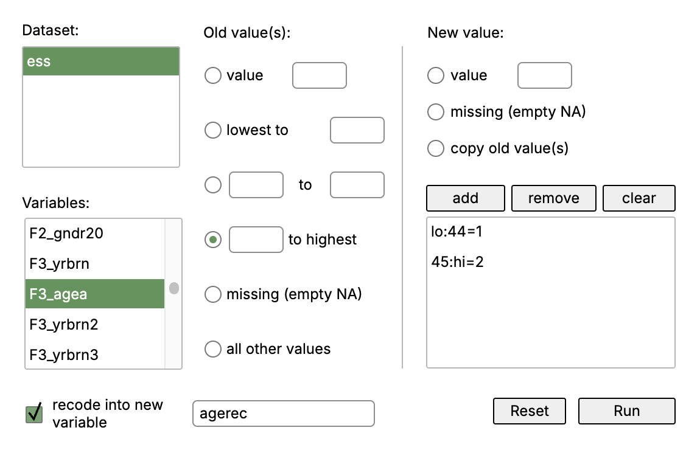
To carry out this example
- Select ess and F3_agea.
- Select recode into new variable and enter agerec.
- Choose lowest to, enter 44, and set the new value to 1. Click add.
- Choose to highest with a lower limit of 45, set the new value to 2, and click add.
- Check both rules, then click Run.
Other rule choices
You can change a single value, a bounded range, missing values, or all remaining values. Replacements may be a new value, missing, or a copy of the original value. remove removes selected rules; clear empties the rule list.
Without the new-variable option, the original variable is overwritten. The operation affects the full dataset even when an analysis filter is active. These example boundaries assume ages in whole years.
The source variable declares 999 missing. Check the missing-value definition of the recoded result as well as its valid categories; do not turn a missing-age code into a genuine age group.
What to look for
The new agerec variable identifies the two age groups. Run a frequency table to check the result, then give the new categories meaningful labels in Variables view. F3_agea remains available with its original label and declared “Not available” code.
Frequency table
Count the cases in each category of a variable. Start here when you want to understand how responses are distributed.
To carry out this example
- Select ess in Dataset.
- Select B1_polintr (How interested in politics).
- Select Variable label. Leave Show values, Valid frequencies, and Observed only checked.
- Click Run.
Table options
- Show values: includes the underlying codes when the variable has labels.
- Valid frequencies: adds percentages based on valid responses when missing values are present.
- Observed only: limits the table to categories that occur in the data.
- Variable label: includes the variable’s descriptive label, if one is defined.
What to look for
The label identifies the question above the table. Read fre as the count, per as the percentage of all cases, and vld as the percentage of valid responses. The four substantive categories total 1,839 cases; the seven refusals are shown separately and excluded from vld.
For “Not at all interested”, 665 out of 1,846 cases gives 36.0%; 665 out of 1,839 valid responses gives 36.2%. The missing definition explains the difference. Filters, grouping, and frequency weights also affect the table.
Contingency table
Compare political interest across the gender categories recorded in the ESS dataset. Both variables carry their declared value labels.
{kind=link}
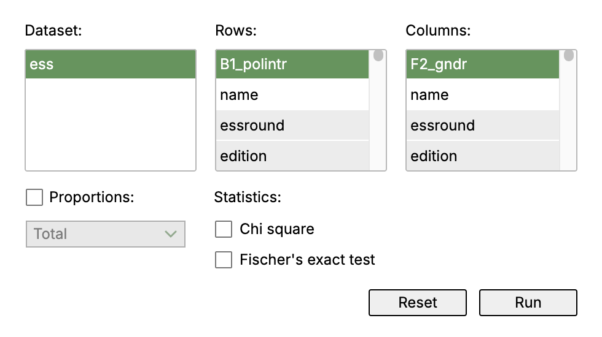
To carry out this example
- Select ess.
- Choose B1_polintr for Rows and F2_gndr for Columns.
- First leave the optional tests unchecked and click Run.
- To compare distributions within gender categories, enable Proportions, choose Columns, and run again.
Proportions and tests
Total uses the whole table as the denominator. Rows uses each row total. Columns uses each column total. Proportions are fractions: 0.25 means 25%.
Chi square requests a test of association. Examine the table and expected-count warnings as well as the p-value.
Current limitation: the option labelled “Fischer’s exact test” can fail because the dialog calls an unavailable function. Leave it unchecked in this version. An R alternative is described in the optional technical reference.
What to look for
The displayed table includes 1,839 valid cases: 649 Male and 1,190 Female. Seven political-interest refusals are excluded. Counts describe this unweighted dataset; compare column proportions when the group sizes differ.
{kind=link}
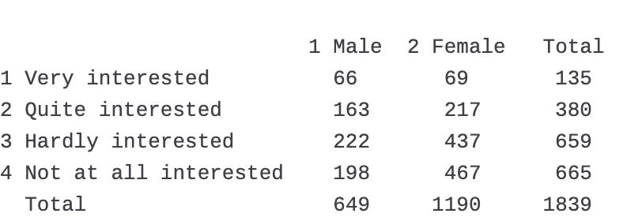
Filters, split groups, and frequency weights apply. Weighted counts do not turn an ordinary chi-squared test into a complex-survey test.
Numerical summaries
Describe the centre and spread of a numeric variable. Trust in the legal system is particularly useful here: its valid scale runs from 0 to 10, with separate declared missing codes.
{kind=link}
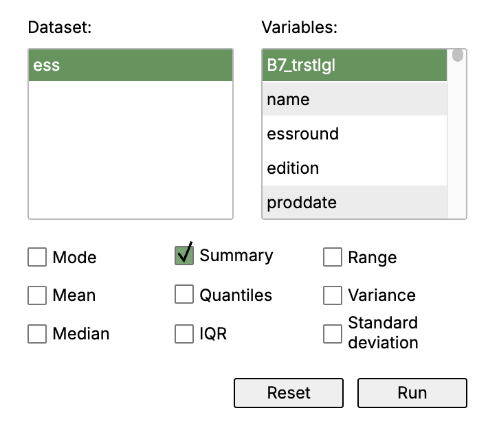
To carry out this example
- Select ess and B7_trstlgl.
- Choose Summary for an overview, or select individual measures such as Mean, Median, and Standard deviation.
- Click Run.
- Compare the output with the variable’s valid scale and missing-value definitions.
Choose a summary
Summary provides an overview. Quantiles describes positions in the distribution. Individual measures include the mode, mean, median, interquartile range (IQR), range, variance, and standard deviation. Summary and Quantiles are alternatives to the individual-statistic selection.
Mean and median describe the centre. Standard deviation and IQR describe spread. The range shows the smallest and largest values. You may select more than one numeric variable.
What to look for
The mean is 4.132 and the median is 4. The valid scores range from 0 to 10; the 82 declared missing responses are excluded. Refusal 77, Don’t know 88, and No answer 99 do not inflate the mean.
{kind=link}
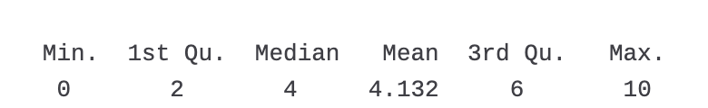
Filters and split groups apply. Supported measures use frequency weights, but range is unweighted. If a multiple-variable analysis reports that a grouping or weight variable is missing, analyse variables individually or consult the technical reference.
One-sample t-test
Compare a numeric mean with a specified value. This illustrative example tests the respondent age variable against 50 years.
{kind=link}
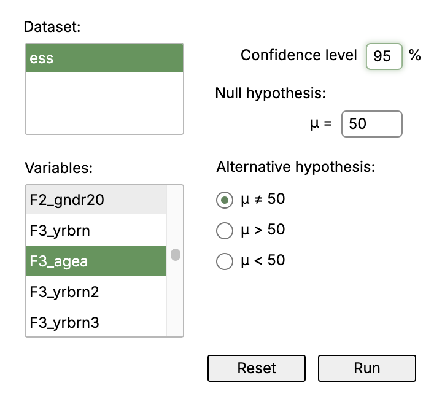
To carry out this example
- Select ess and F3_agea.
- Enter 50 under Null hypothesis.
- Choose μ ≠ 50 for a two-sided alternative.
- Leave Confidence level at 95% and click Run.
Other choices
Select the greater-than or less-than alternative only when your research question calls for that direction. Enter a confidence percentage strictly between 0 and 100. The starting hypothesised mean is 0, so remember to change it for this example.
What to look for
The estimated mean is 49.60 years, with a 95% confidence interval from 48.76 to 50.44. The p-value is 0.3544. In this ordinary unweighted test, the data do not give evidence of a difference from 50 at the 5% level; this is not proof that the mean equals 50.
{kind=link}
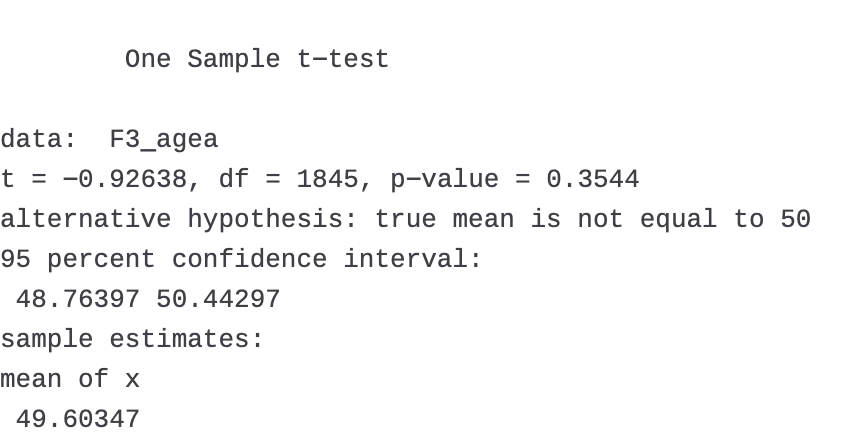
An active filter applies. Split groups and frequency weights do not apply to this dialog.
Independent samples t-test
Compare respondent age between the two observed gender categories in this ESS dataset. This is an illustration of the dialog, not a substantive population claim.
{kind=link}
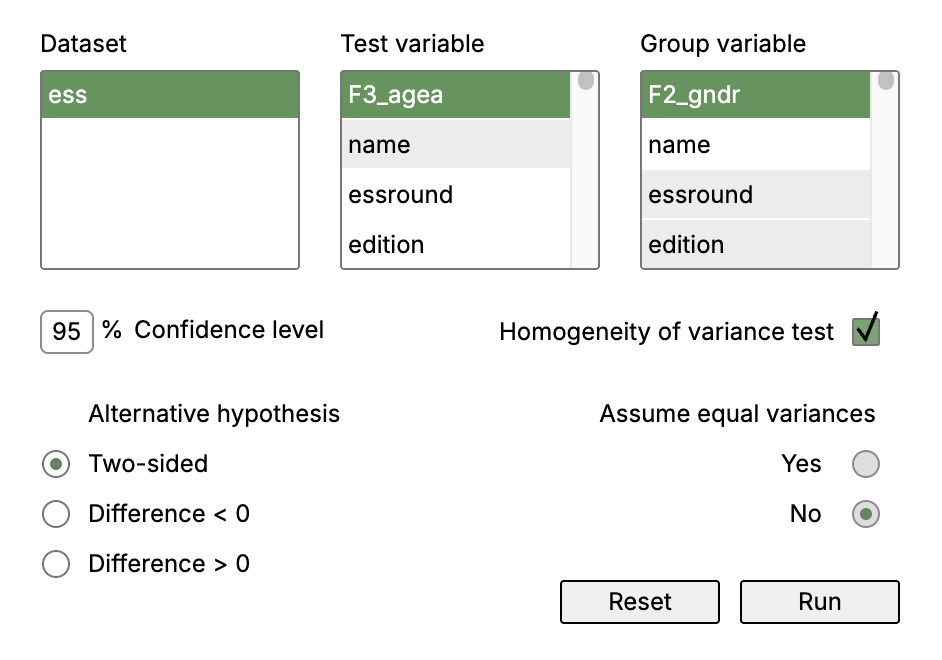
To carry out this example
- Select ess.
- Choose F3_agea under Test variable and F2_gndr under Group variable.
- Choose Two-sided and a confidence level of 95%.
- Leave Homogeneity of variance test selected for the illustrated setup, then click Run.
Variance and direction
With the homogeneity test enabled, the analysis handles the equal-variance decision. Disable it to make the decision yourself under Assume equal variances.
Use a grouping variable with two observed groups. Directional alternatives depend on which group is treated as first; check the group order before selecting a direction. This procedure is for independent groups, not paired measurements.
What to look for
The displayed means are 47.87 for Male and 50.55 for Female. The confidence interval describes the first group’s mean minus the second: about −4.40 to −0.95 years. The reported p-value is 0.002415. These are ordinary unweighted comparisons of the supplied cases, not a full ESS survey-design analysis.
{kind=link}
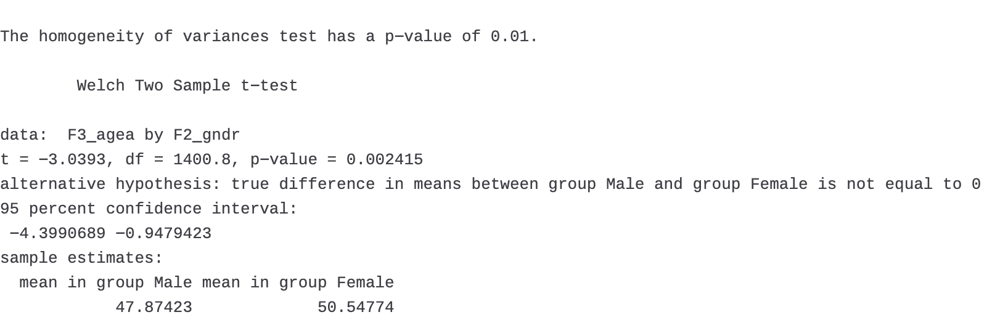
The active filter applies. Split groups and frequency weighting do not apply to this dialog.
One-way ANOVA
Compare age across respondents’ descriptions of their residential area. The ESS variable F14_domicil distinguishes a big city, suburbs, towns, villages, and countryside homes.
{kind=link}
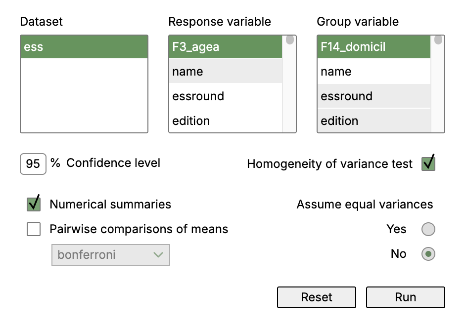
To carry out this example
- Select ess.
- Choose F3_agea as Response variable and F14_domicil as Group variable.
- Leave Homogeneity of variance test enabled, or disable it to choose the variance assumption yourself.
- Select Numerical summaries when you want descriptive information with the test.
- Click Run. Enable Pairwise comparisons of means only when you need comparisons of particular groups.
Pairwise comparisons
The adjustment selector becomes available when pairwise comparisons are enabled. Bonferroni is the default. Report the adjustment method when reporting those comparisons.
The pairwise procedure uses its own defaults; changing the main ANOVA variance choice or confidence level does not automatically change those comparisons.
What to look for
The output shows the overall test and the mean, standard deviation, and sample size for each residential category. The countryside-home category has only 10 valid cases, much fewer than the others. The overall p-value does not identify which pairs differ; use the appropriate pairwise procedure for that question.
{kind=link}
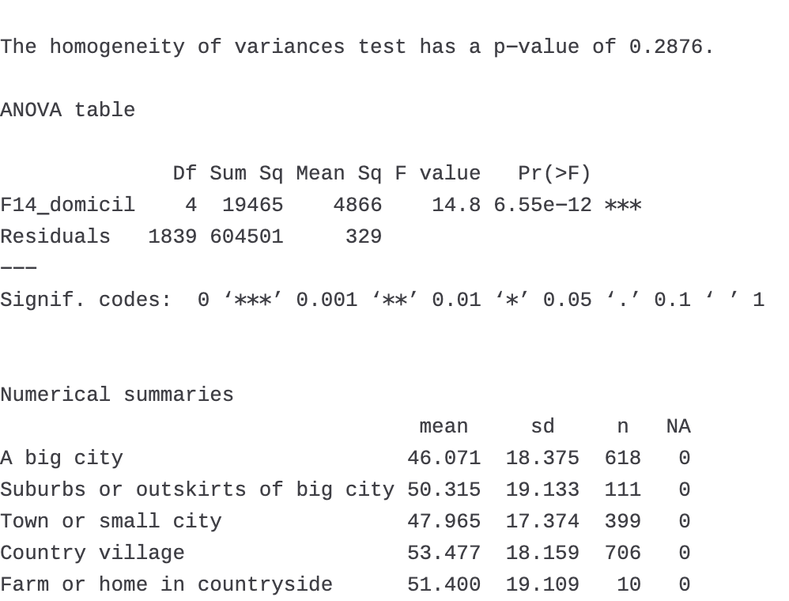
Active filters and split groups apply. Frequency weighting does not.
Go to a case or variable
Jump to a column or row in the active dataset without scrolling through the whole table.
{kind=link}
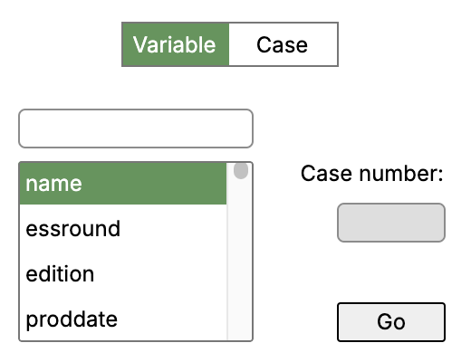
To carry out this example
- Open the dataset editor’s Go to dialog.
- Choose Variable, type part of a variable name in the search field, and select the matching variable. Or choose Case and enter a row number, starting from 1.
- Click Go.
What to look for
The editor moves to that position. This is navigation only: it does not select a subset for analysis or change any values.
Filters, groups, and weights
These settings stay with the selected dataset. They can explain why a result differs from a table you produced earlier.
- Filter: analyse only cases that meet a condition while retaining the original data.
- Split groups: repeat a supported analysis separately for each group.
- Frequency weight: let a row represent several occurrences in supported procedures.
| Procedure | Filter | Split groups | Frequency weight |
|---|---|---|---|
| Frequency and contingency tables | Yes | Yes | Yes |
| Numerical summaries | Yes | Yes | Supported measures |
| One-sample and independent-samples t-tests | Yes | No | No |
| One-way ANOVA | Yes | Yes | No |
Return to all cases without grouping or weights
- In Subset cases and variables, select ess, choose All cases, and click OK.
- In Split by groups, select the dataset and click Reset.
- In Apply frequency weighting, select the dataset and click Reset.
Removing a filter does not restore previously deleted cases. Recoding and sorting act on the underlying dataset rather than only the filtered view. Create a new subset first when a transformation should affect selected cases alone.
Send a command to the syntax tab
Like SPSS’s Paste command to syntax workflow, DialogR lets you keep the command built from your dialog choices. You do not need to type it yourself.
{kind=link}
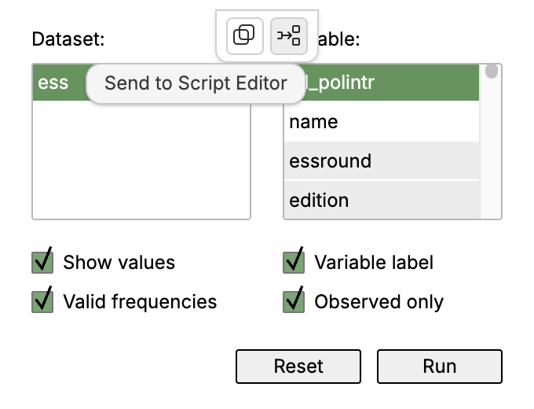
To carry out this example
- Choose your dataset, variables, and options in the analysis dialog.
- Move the mouse over the middle of the top edge of the dialog. A small contextual menu appears.
- Click the right-hand icon, labelled Send to Script Editor.
- The generated command is inserted into the Script Editor (the syntax tab). Keep it with your other commands and save the script when you want to repeat the analysis later.
Sending a command to the editor does not run the analysis. Use Run in the dialog when you want results immediately. The left-hand action in the contextual menu, Copy, copies the command to the clipboard.
The generated command can help you keep a record, repeat an analysis, or gradually learn R. Reading it is optional. The subset dialog is an exception in that its condition field accepts a short expression, explained in that chapter.
Open the optional R reference →
The reference explains package relationships, command structure, and examples. It is separate from the step-by-step instructions so you can consult it when it is useful.
Troubleshooting and saving your work
Start with the dialog’s message and the dataset settings. Most unexpected results can be traced to an input choice, missing value, or active filter, group, or weight.
A dialog cannot run
Wait for the runtime to finish starting. Select a dataset and all required variables. If a package is missing or outdated, follow Set up DialogR.
Results differ from the example
Use the prepared ESS R dataset, then check the filter, grouping, and weight settings. Check declared missing-value definitions and confirm that you chose the same variable and did not change the original data.
A variable is missing
Select the correct dataset. A subset may have excluded the column you need. Check its name and type in the Variables view.
WebR is slow
Allow the browser runtime and package library to finish loading. For larger datasets and repeated intensive analyses, use desktop DialogR after completing package setup.
Keep the original data
Keep a copy of your input file. Use new-dataset and new-variable options for transformations when you want to preserve the originals. Save datasets or the workspace explicitly; do not rely on an open browser tab.
You may also keep generated commands in a script to repeat your work later. A script records instructions, not a copy of every dataset. For a reproducible problem, report an issue with the dialog name, version, exact message, and a small non-confidential example.